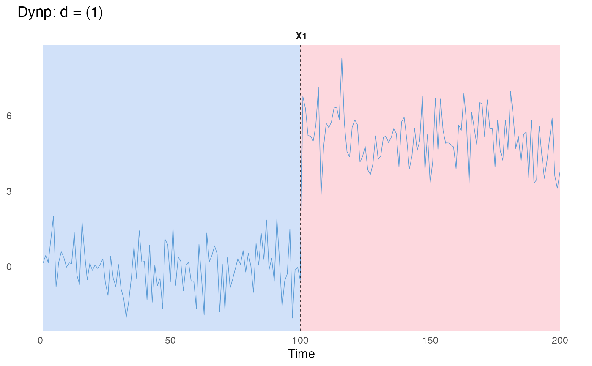
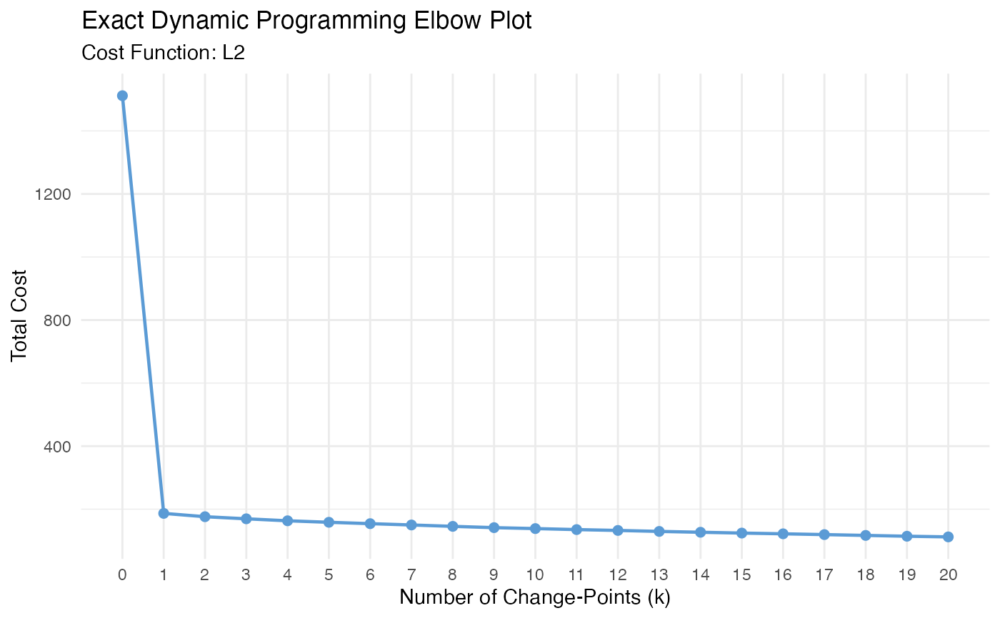

An R6 class implementing exact dynamic programming for offline change-point detection.
Details
Dynp finds the segmentation that globally minimises the total cost for a specified number of
change-points – unlike PELT (exact for a penalty, not a change-point count) and binSeg
(greedy at each split, not guaranteed globally optimal for a fixed count), Dynp is exact for
whatever nBkps is requested. The price is complexity: building the full table costs
\(O(\text{nBkpsMax} \cdot M^2)\) where \(M\) is the number of (minSize, jump)-admissible
grid points (\(M \approx n/\text{jump}\) in the worst case), versus PELT's near-linear pruning
or binSeg's \(O(n \log n)\)-ish greedy search. $fit() computes the exact minimal cost for
every change-point count from 0 to nBkpsMax in one pass (see $costPath()). Dynp is
therefore useful when an exact fixed-number-of-change-points solution is required,
particularly when using custom cost functions for which PELT pruning cannot be guaranteed.
Dynp requires a R6 object of class costFunc, exactly as PELT/binSeg/Window do – see
costFunc for the supported cost functions ("L1", "L2", "SIGMA", "VAR", "LinearL2",
"LinearSIGMA", "LinearL1", "Custom").
Some examples are provided below. See the package website for detailed usage!
Methods
$new()Initialises a
Dynpobject.$describe()Describes the
Dynpobject.$fit()Constructs a
Dynpmodule inC++.$eval()Evaluates the cost of a segment.
$predict()Returns the exact optimal breakpoints, for a given
penornBkps.$segments()Returns the cost and parameter estimates of each segment from the latest
$predict().$costPath()Returns the exact minimal cost for every change-point count up to
nBkpsMax.$getHistory()Same data as
$costPath(), as ak/costdata.frame(same shape asbinSeg/Window's$getHistory(), minusadded_bkp– see its own docs for why).$plotElbow()Plots the elbow curve (Total Cost vs. Number of Change-Points).
$plot()Plots change-point segmentation in
ggplotstyle.$clone()Clones the
R6object.
References
Truong, C., Oudre, L., & Vayatis, N. (2020). Selective review of offline change point detection methods. Signal Processing, 167, 107299.
Author
Minh Long Nguyen edelweiss611428@gmail.com
Toby Dylan Hocking toby.hocking@r-project.org
Charles Truong ctruong@ens-paris-saclay.fr
Huy Nhat Minh Nguyen sleepysnorlax0115@gmail.com
Active bindings
minSizeInteger. Minimum allowed segment length. Can be accessed or modified via
$minSize. ModifyingminSizewill automatically trigger$fit().jumpInteger. Search grid step size. Can be accessed or modified via
$jump. Modifyingjumpwill automatically trigger$fit().nBkpsMaxInteger or
NULL. Upper bound on the number of change-points the exact DP table is built for;$predict(nBkps = ...)treats this as a cap, not a requirement – see$predict(). IfNULL(default),$fit()resolves it tomin(20, floor(n / minSize) - 1), i.e. the maximum feasible value givenminSize, capped at 20. Set explicitly to go beyond 20 (up to the maximum feasible value) or to lower it; the table costs \(O(\text{nBkpsMax} \cdot M^2)\) work and \(O(\text{nBkpsMax} \cdot M)\) memory. Can be accessed or modified via$nBkpsMax; modifying it will automatically trigger$fit().costFuncR6object of classcostFunc. Can be accessed or modified via$costFunc. ModifyingcostFuncwill automatically trigger$fit().tsMatNumeric matrix. Input time series matrix of size \(n \times p\). Can be accessed or modified via
$tsMat. ModifyingtsMatwill automatically trigger$fit().covariatesNumeric matrix. Input time series matrix having a similar number of observations as
tsMat. Can be accessed or modified via$covariates. Modifyingcovariateswill automatically trigger$fit().
Methods
Method new()
Initialises a Dynp object.
Usage
Dynp$new(minSize, jump, nBkpsMax, costFunc)Arguments
minSizeInteger. Minimum allowed segment length. Default:
1L.jumpInteger. Search grid step size: only positions in {k, 2k, ...} are considered. Default:
1L.nBkpsMaxInteger or
NULL. Upper bound on the number of change-points to build the exact DP table for. Default:NULL(resolved tomin(20, floor(n / minSize) - 1)at$fit()time).costFuncA
R6object of classcostFunc. Should be created viacostFunc$new()to avoid error. Default:costFunc$new("L2").
Method describe()
Describes a Dynp object.
Returns
Invisibly returns a list storing at least the following fields:
minSizeMinimum allowed segment length.
jumpSearch grid step size.
nBkpsMaxThe user-set
nBkpsMax(possiblyNULL).resolvedNBkpsMaxThe
nBkpsMaxactually used by the last$fit()(NULLif not fitted).costFuncThe
costFuncobject.fittedWhether or not
$fit()has been run.tsMatTime series matrix.
covariatesCovariate matrix (if exists).
nNumber of observations.
pNumber of features.
Method fit()
Constructs a C++ module for Dynp and builds the exact DP table.
Arguments
tsMatNumeric matrix. A time series matrix of size \(n \times p\) whose rows are observations ordered in time. If
tsMat = NULL, the method will use the previously assignedtsMat(e.g., set via the active binding$tsMator from a prior$fit(tsMat)). Default:NULL.covariatesNumeric matrix. A time series matrix having a similar number of observations as
tsMat. Required for models involving both dependent and independent variables. Ifcovariates = NULLand no prior covariates were set (i.e.,$covariatesis stillNULL), the model is force-fitted with only an intercept. Default:NULL.
Details
This method constructs a C++ Dynp module and sets private$.fitted to TRUE, enabling the
use of $predict(), $costPath() and $eval(). If $nBkpsMax is NULL, it is resolved here to
min(20, floor(n / minSize) - 1) (with a message); if set higher than floor(n / minSize) - 1,
it is capped to that (with a warning).
Method eval()
Evaluate the cost of the segment (a,b]
Method predict()
Returns the exact optimal breakpoints, either under a linear penalty or for a specified number of change-points.
Arguments
penNumeric. Penalty per change-point; the change-point count is chosen by minimising \(\text{cost} + \text{pen} \cdot k\) over \(k = 0, \dots, \text{nBkpsMax}\) (same convention as
PELT/binSeg/Window). Ignored ifnBkpsis supplied. Default:0.nBkpsInteger. If supplied, takes precedence over
pen: returns the exact optimal segmentation for exactlynBkpschange-points. Treated as an upper bound, not a strict requirement, in the same spirit asbinSeg/Window: ifnBkpsexceedsnBkpsMax, it is capped tonBkpsMaxand a message reports the shortfall. UnlikebinSeg/Window, the result is still exact for whatever count is actually used – capping only ever happens because the DP table wasn't built that far (a configuration choice via$nBkpsMax), not becauseDynpran out of candidates the way a greedy search can. If no valid segmentation exists at all for the (possibly capped) count – only possible whenjumpis large relative tominSize– this still errors, since there is no well-defined smaller-but-still-what-you-asked-for answer to fall back to. Default:NULL.
Details
With nBkps = k, this returns the segmentation into exactly k change-points that globally
minimises the total cost – exact, unlike binSeg$predict() for the same k. With pen,
this instead minimises the penalised cost over every change-point count the DP table covers,
matching how PELT/binSeg/Window already select a count from a penalty.
Both the DP table (via $fit()) and the traceback here only depend on minSize/jump
admissible positions, so $predict() itself is cheap (O(nBkps)) regardless of which mode
is used – the cost was already paid in $fit().
Temporary segment end-points are saved to private$.tmpEndPoints after $predict(), enabling
users to call $plot() without specifying endpoints manually.
Method segments()
Returns the cost and parameter estimates of each segment from the latest $predict().
Details
Let \(0 = c_0 < c_1 < \dots < c_{k+1} = n\) be the end-points from the latest $predict(). Segment \(i\) is
\((c_{i-1}, c_i]\), Cost is \(c_{(c_{i-1}, c_i]}\) and Params is its minimiser. The costs sum to
$costPath()[k + 1], the exact minimal total cost for \(k\) change-points. With nBkps, \(k\) is the
requested count (capped at the resolved nBkpsMax). With pen, \(k\) is the count, from 0 up to the resolved
nBkpsMax, that minimises the total cost plus pen times \(k\).
Temporary end-points are cleared by $fit(), so $predict() must be run again after modifying the object via
its active bindings.
Returns
A list with one element per segment \((Start, End]\). Each element is a list with:
StartStart index of the segment (exclusive, 0-based), same convention as
$eval().EndEnd index of the segment (inclusive).
CostThe segment cost, as returned by
$eval(Start, End).ParamsA named list of the segment parameter estimates, e.g.
list(mean = ...)for"L2". SeecostFactoryfor the fields returned by each cost function.
Method costPath()
Returns the exact minimal cost for every change-point count the DP table covers.
Details
This is the data behind the "elbow method" for choosing the number of change-points:
plot it (see $getHistory()/$plotElbow()) and look for where the marginal decrease in cost
flattens out. It comes for free out of $fit() – no extra computation is triggered here.
Returns
A numeric vector of length resolvedNBkpsMax + 1: element k+1 is the exact minimal
total cost of segmenting the series into exactly k change-points, for k = 0, ..., resolvedNBkpsMax.
Inf at position k+1 means no valid segmentation with exactly k change-points exists given
minSize/jump (only possible when jump is large relative to minSize).
Method getHistory()
Retrieves the exact minimal cost for every change-point count the DP table covers,
as a data.frame (same shape as binSeg/Window's $getHistory(), minus added_bkp).
Details
Unlike binSeg/Window, there is no added_bkp column here: binSeg and Window
each build a single nested sequence of change-points, where every k's answer is the
previous k-1's answer plus one more point, so "the breakpoint added at this step" is
well-defined. Dynp's per-k solutions are each independently exact and need not be nested at
all – the optimal segmentation for k change-points can differ completely from the one for
k-1. Use $predict(nBkps = k) to get the full breakpoint set for a given k.
Method plotElbow()
Plots the elbow curve (Total Cost vs. Number of Change-Points).
Method plot()
Plots change-point segmentation
Usage
Dynp$plot(
d = 1L,
endPts,
dimNames,
main,
xlab,
tsWidth = 0.25,
tsCol = "#5B9BD5",
bgCol = c("#A3C4F3", "#FBB1BD"),
bgAlpha = 0.5,
ncol = 1L
)Arguments
dInteger vector. Dimensions to plot. Default:
1L.endPtsInteger vector. End points. Default: latest temporary changepoints obtained via
$predict().dimNamesCharacter vector. Feature names matching length of
d. Defaults to"X1", "X2", ....mainCharacter. Main title. Defaults to
"Dynp: d = ...".xlabCharacter. X-axis label. Default:
"Time".tsWidthNumeric. Line width for time series and segments. Default:
0.25.tsColCharacter. Time series color. Default:
"#5B9BD5".bgColCharacter vector. Segment colors, recycled to length of
endPts. Default:c("#A3C4F3", "#FBB1BD").bgAlphaNumeric. Background transparency. Default:
0.5.ncolInteger. Number of columns in facet layout. Default:
1L.
Examples
## L2 example
set.seed(1121)
signals = as.matrix(c(rnorm(100,0,1),
rnorm(100,5,1)))
# Default L2 cost function; nBkpsMax left NULL -> resolved to min(20, maximum feasible value)
DynpObj = Dynp$new(minSize = 1L, jump = 1L)
DynpObj$fit(signals)
#> `nBkpsMax` not set; using 20L.
DynpObj$predict(nBkps = 1)
#> [1] 100 200
DynpObj$plot()
#> `endPts` is missing. Proceed to use the temporary `endPts`!
#> `dimNames` is missing. Proceed to use the default `dimNames`! e.g., `paste0('X', d))`.

# Same result, reached via a penalty instead of an explicit count
DynpObj$predict(pen = 100)
#> [1] 100 200
# The exact cost of every change-point count from 0 to nBkpsMax -- elbow-method data
DynpObj$getHistory()
#> k cost
#> 1 0 1511.6991
#> 2 1 186.6857
#> 3 2 176.1339
#> 4 3 169.4885
#> 5 4 163.1693
#> 6 5 158.4455
#> 7 6 154.0807
#> 8 7 149.8917
#> 9 8 145.5268
#> 10 9 141.4222
#> 11 10 138.4614
#> 12 11 135.2499
#> 13 12 132.5667
#> 14 13 129.4793
#> 15 14 126.7961
#> 16 15 124.2104
#> 17 16 121.8743
#> 18 17 119.3731
#> 19 18 116.7732
#> 20 19 114.1875
#> 21 20 112.0984
DynpObj$plotElbow()
